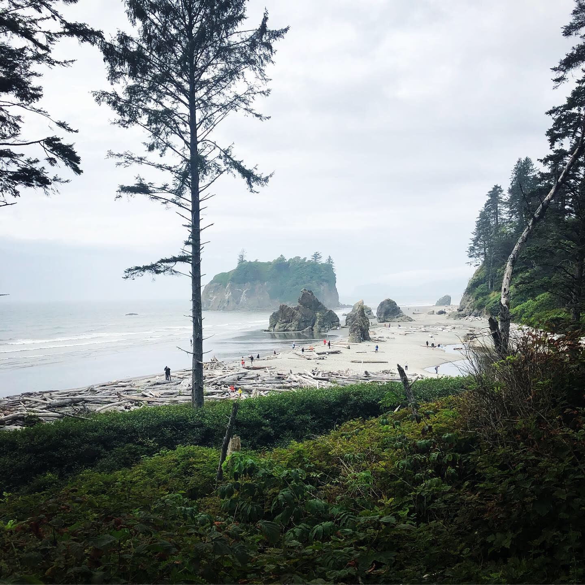
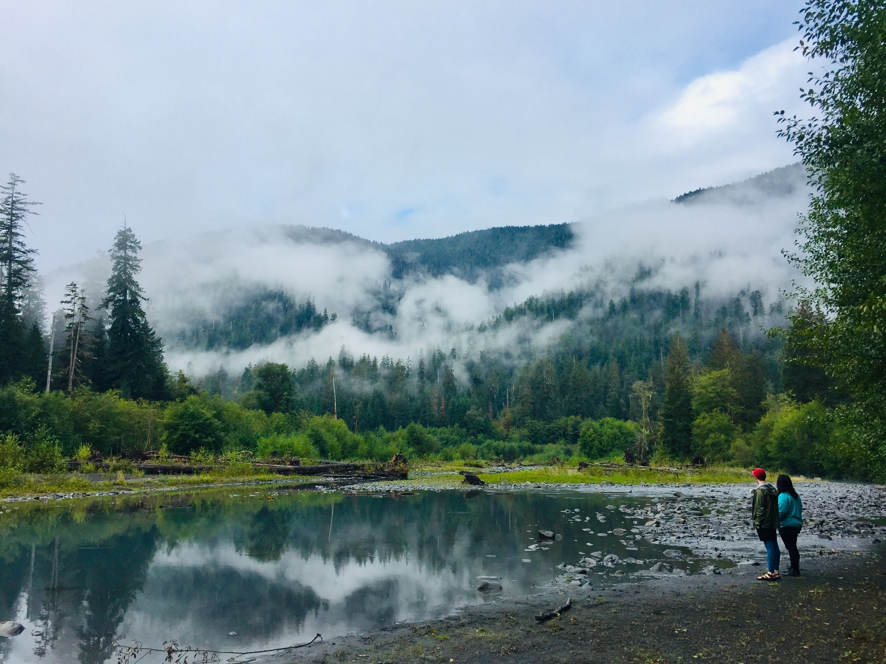
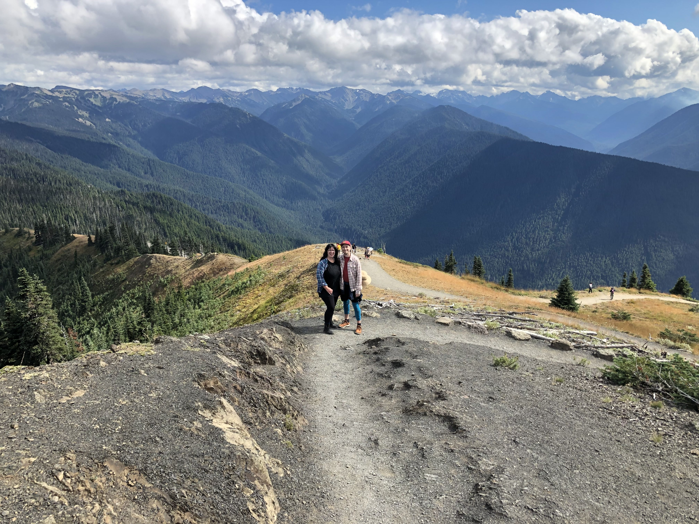
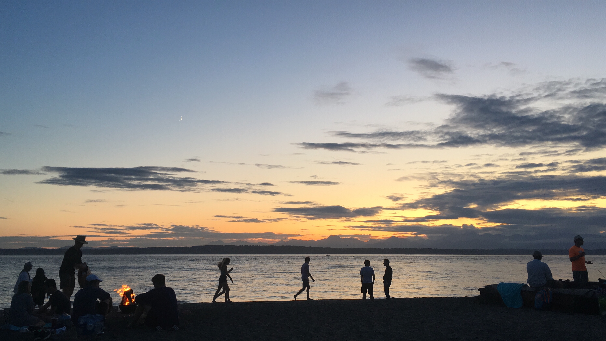
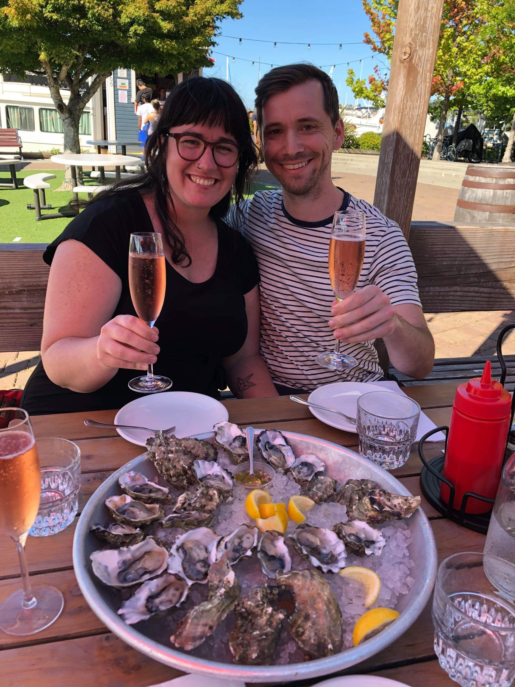
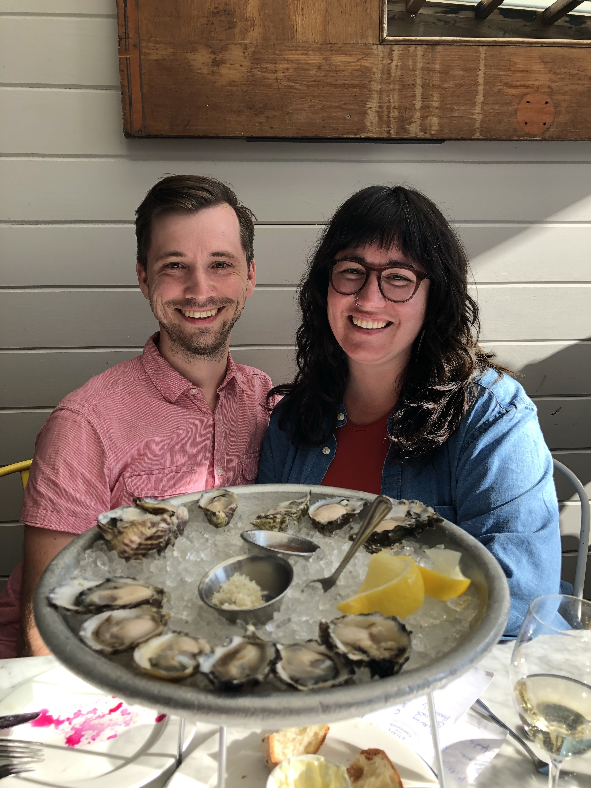

My 2019 Vacation: Part One - Seattle and the Olympic Peninsula
For the second year in a row, my boyfriend Aaron and I visited his brother Jordan in Seattle. I love visiting the Pacific Northwest as it has it all: fresh clean air, mountains, forests, rivers, oceans, and delicious food. Here's our travel journal from the first week of our 2019 vacation.
Thursday 8/29: Kalaloch & Ruby Beaches
We all enjoy hiking and camping, we decided to include visting the Olympic Peninsula while we were in town. On the first day of our trip, we drove to the Olympic Peninsula from Seattle early in the morning and got our tents set up at Kalaloch Beach Campground.

After setting up and eating lunch, we drove to Ruby Beach, which was about 15 minutes north. We had to climb over giant driftwood logs bleached white by the sun in order to access the beach. We explored tidepools and tried to stay warm before heading back to the campsite at Kalaloch.

Friday 8/30: Hoh Rainforest & Campground
Our goal was to enjoy each morning slowly and thoughtfully. Aaron took this short video of Jordan and I drinking coffee at the Kalaloch Beach Campground, looking out over the beach.
After enjoying breakfast, we drove to the Hoh Campground and found a sweet little campsite tucked away by the Hoh River. After setting up our tents, we drove to the Hoh Rainforest Visitor Center. We first walked a short trail where we were mesmerized by aquatic plants (featured in the video clip below), then meandered through giant trees covered in shaggy moss in the Hall of Mosses trail.
After a fantastic day of hiking, we came back to our campsite and built a fire. We ate hot dogs and s'mores, in true Midwestern camping fashion.
Saturday 8/31: Hoh Campground & Hurricane Ridge
We woke up to a mystical fog on the blue-green river behind our campground, low in the trees and ethereal. It felt unreal and I never wanted to leave.

After exploring the riverbeds and climbing on fallen trees, we packed up our campsite and drove to Hurricane Ridge. The drive up was steep and winding, which was terrifying to me. But the views at the top were worth it. Aaron caught me frequently on video saying "Wow!" Between the hikes and views, this spot took my breath away.

After a lovely afternoon, we drove to the ferry at Bainbridge Island and took a relaxing ride back to Seattle.
Sunday 9/1: Back in Seattle
After a couple days of hiking, camping, and lots of driving, we were ready to have a relaxing day at home. Jordan's apartment was our home base, and we spent the day cooking, reading, and taking naps. We wanted to catch a lovely sunset, so we drove to Golden Gardens Park, which looks out west over the Puget Sound. The beach was filled with small clusters of people enjoying music and campfires, and as night fell, we made friends with a group of people who invited us to keep warm by their fire. We listened to Barack Obama's Summer Playlist and talked about travels and new adventures to come.

Monday 9/2: Pike's Place Market
We decided to be true Seattle tourists on this day and go to Pike's Place Market. We browsed the titles at Left Bank Books and I found a book I've wanted for a while called Worms Eat My Garbage by Mary Appelhof. Later we hit up an oyster happy hour on the water at White Swan Public House. The oysters were just okay, but the company was lovely, and it was a wonderful way to end our day.

Tuesday 9/3: Kayaking on Lake Union & Treating Ourselves
I love kayaking, so we arranged to rent kayaks on Lake Union during the day to explore Seattle from a different perspective. While the experience gave us a great view of unique houseboats and Gas Works Park, it was exhausting due to fighting the currents left behind by the large boats passing us on the lake. Much different than river kayaking.
After taking a nap at home, we also visited The Walrus & the Carpenter, which was our favorite restaurant we visited the previous year. They have an oyster happy hour during the first hour of service, so we arrived early and were the first in line. Here's a photo of Aaron and me with our first round of oysters. We enjoyed several rounds, along with some innovative vegetable dishes and lots of rosé. It was a fantastic way to cap off our time in Seattle.
